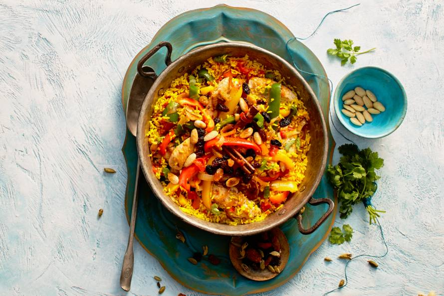

Biryani
Ingrediënten
250 g gele rijst
50 g garneeramandelen
3 el ghee (geklaarde boter, pot 350 ml)
300 g kipfilethaasjes
3 uien
1 zak paprikamix
4 cm verse gember
3 tenen knoflook
6 kardemompeulen (strooier 30 g)
2 kaneelstokjes
3 tomaten
15 g verse koriander
50 g royale rozijnen uit chili
Beschrijving
1. Kook de rijst volgens de aanwijzingen op de verpakking. Laat met de deksel op de pan staan tot gebruik. Verhit een koekenpan zonder olie of boter en rooster de amandelen op middelhoog vuur in 3 min. goudbruin. Laat afkoelen op een bord.
2. Verhit 1 el ghee en bak de kipfilethaasjes in 5 min. goudbruin en gaar. Voeg peper en zout toe. Schep uit de pan en houd warm onder aluminiumfolie. Snijd de ui in halve ringen. Verhit de rest van de ghee in dezelfde pan en bak de ui 5 min. op hoog vuur. Halveer de paprika’s in de lengte en verwijder de zaadlijsten. Snijd het vruchtvlees in repen van 2 cm. Schil en rasp de gember. Snijd de knoflook fijn.
3. Voeg de paprika, knoflook, gember, kardemom en kaneelstokjes toe aan de ui en bak 3 min. mee. Snijd de tomaten in blokjes en voeg toe. Laat met de deksel op de pan op laag vuur 15 min. stoven. Voeg peper en zout toe. Voeg de laatste 5 min. de kipfilethaasjes toe.
4. Snijd de koriander fijn. Verwijder de kardemom en kaneelstokjes uit de pan. Schep de rijst en de helft van de koriander door het mengsel en breng op smaak met peper en eventueel zout. Schep het gerecht op een grote schaal en garneer met de amandelen, rozijnen en de rest van de koriander.
